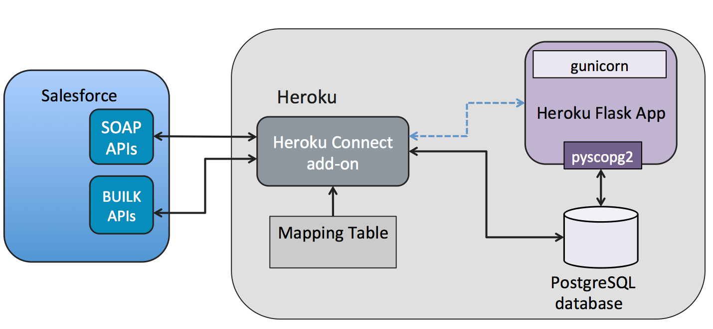
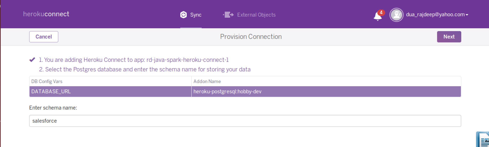

- Introduction
- Prerequisites
- Clone the Source Code
- Heroku Login
- Requirements File
- Procfile
- DB Initialization
- Flask Controller
- Deploying to Heroku
- Add PostgreSQL Add-On
- Add Heroku Connect Add-On
- Configure Heroku Connect Add-On
- Home Page
- Contact List
- Create a New Contact
- Optional Step Show Contacts Locally
- Summary
Introduction
This workshop shows how to Create and Run a Python app with psycopg2 which uses PostgreSQL based Heroku Connect

Figure 1 show how the HerokuConnect Add-On interacts with Heroku Postgres and force.com behind the scenes. Make sure you have Python installed. Also, install the Heroku Toolbelt
We will be using a basic Flask app available at flask_psycopg2_v2
This app has four rest endpoints
@app.route('/') which displays Hello world
@app.route('/contacts') which fetches list of contacts from Postgres table salesforce.contact
@app.route('/create_contact', methods=['POST','GET']) which creates a new contact
@app.route('/contactform') which serves an HTML Form for entering new contact details
Prerequisites
This workshop assumes you have following setup
Clone the Source Code
$ git clone https://github.com/rajdeepd/flask-psycopg2-v2
Heroku Login
First download CLI, install it and run the following command.
$ heroku login
Requirements File
Note : This section is for information only
Notice that the Requirements file already exists, this will be used by Heroku to setup the dynos
$ cat requirements.txt
Flask==0.10.1
gunicorn==19.3.0
itsdangerous==0.24
Jinja2==2.8
MarkupSafe==0.23
psycopg2==2.6.1
Werkzeug==0.11
wheel==0.24.0
Procfile
Note : This section is for information only
There is already a Procfile which tells the Heroku what kind of Dyno is required and the source for the application.
web: gunicorn app:app --log-file -
DB Initialization
Note : This section is for information only
We will parsing the DATABASE_URL environment variable to connect to PostgreSQL database. The PostgreSQL Python driver is already configured in the requirements file.
Steps are
- Parse DATABASE_URL into variable
url - Create a connection string
dbfrom the parsedurl. - Create a Database connection
conn. - Open a Database cursor
cur.
url = urlparse.urlparse(os.environ.get('DATABASE_URL'))
db = "dbname=%s user=%s password=%s host=%s " % (url.path[1:],
url.username, url.password, url.hostname)
schema = "schema.sql"
conn = psycopg2.connect(db)
cur = conn.cursor()
Flask Controller
Note : This section is for information only
app.py is the main controller for our applications and code listing below shows the implementation of various use cases
List Contacts
@app.route('/contacts')
def contacts():
try:
cur.execute("""SELECT name from salesforce.contact""")
rows = cur.fetchall()
response = ''
my_list = []
for row in rows:
my_list.append(row[0])
return render_template('template.html', results=my_list)
except Exception as e:
print(e)
return []
Create Contacts
Implementation of /createcontactform endpoint
@app.route('/contactform')
def contactform():
return render_template('contactform.html')
Implementation of /create_contact endpoint.
@app.route('/create_contact', methods=['POST','GET'])
def create_contact():
try:
if request.method == "POST":
first_name = request.form["first-name"]
last_name = request.form["last-name"]
email = request.form["email"]
app.logger.info(first_name)
statement = "insert into salesforce.contact(firstname,
lastname, email) values ('" \
+ first_name + "','" + last_name + "','" + email + "');"
cur.execute(statement)
conn.commit()
errors = []
return render_template('result.html', errors=errors,
firstname=first_name,
lastname=last_name)
except Exception as e:
print(e)
return []
Deploying to Heroku
Before moving on, create a Heroku account and run $ heroku login command to login to your created heroku account.
$ heroku create
$ git push heroku master
$ heroku open
Add PostgreSQL Add-On
Add Postgress Add-On as shown below.
$ heroku addons:create heroku-postgresql:hobby-dev
Add Heroku Connect Add-On
Configure Heroku Connect Add-On. Command below configures Herok-Connect Add-On to the application.
$ heroku addons:create herokuconnect
Configure Heroku Connect Add-On
- Setup Connection

- Enter Schema Name : This is the schema name underwhich database will be created.

- Trigger OAuth

- Enter Salesforce.com developer account credentials

- Create Mappings

- Create Mappings Contacts : Choose the fields in Salesforce Schema which need to be mapped to Postgres Database in the application.

Write Enable : Make sure you enable
Write to Salesforce any updates to your databasecheck boxExplore Contacts in the Dashboard

Home Page

Contact List
Browse to URL http://{your-app-name}.herokuapp.com/contacts to see the list of contact names.

Create a New Contact
Browse to URL http://{your-app-name}.herokuapp.com/createcontactform to see the list of contact names.

Optional Step Show Contacts Locally
Prerequisites
- Python 2.7
- pip
- virtualenv
- PostgreSQL client (Optional if you want to run the application locally)
Install Virtual Environment
Go to the application Folder
flask-psycopg2-sampleand install a virtual environment in it.$ cd flask-psycopg2-v2 $ virtualenv venv $ source venv/bin/activate
Install Dependencies
$ pip install flask gunicorn psycopg2Configure the DATABASE_URL in the local environment
$ heroku config === fast-sands-40695 Config Vars DATABASE_URL: postgres://<user_name>:<password>@<ipaddress>.compute-1.amazonaws.com:5432/<database_name> HEROKUCONNECT_URL: DATABASE_URL:salesforce
Export DATABASE_URL
$ export DATABASE_URL=postgres://<user_name>:<password>@<ipaddress>.compute-1.amazonaws.com:5432/db
Open the following URL
http://localhost:5000/contactsyou should be able see the contacts.Run the app using the following command
$ python app.py
Your app should now be running on localhost:5000
Summary
In this workshop we learnt how to configure a Python Flask Application to work with Heroku Connect. We used Psycopg2 driver for talking to the PostgreSQL database deployed on Heroku.